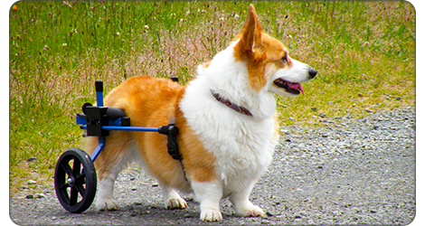

About Corgis / Health
Corgis are an overall healthy breed, with hip dysplasia and eye conditions being the main problems breeders must screen for.
The Problems That Stem From Height and being of Stocky Build
- A corgi's short height is the root of its health issues. Their short legs are the result of a genetic mutation causing achondroplastic dwarfism, or chondrodystrophy. The mutation alters the growth and development of cartilage, while also causing an early breakdown of it, throughout the body. As such, Corgis are prone to a number of skeletal issues.
- Obesity for Corgis is more than just a cosmetic problem. It can be a death sentence. The extra weight pulls on the spine and aggravates the joints, precipitating problems that otherwise may not have occurred. Corgis are nothing if not motivated by food, but it is essential that weight is carefully monitored. It’s very easy for a Corgi to gain weight. A good exercise regime and appropriate portions of food are quite necessary for a Corgi’s health.
- At the twilight of a Corgi’s life, obese or not, there is one last problem owners need to worry about: degenerative myleopathy, or DM. DM is an autoimmune disease where the body’s immune system attacks the nervous system, causing progressive hind-end loss. The age of onset is typically 8 and above and, when noticed, typically means a dog has 6 to 12 months to live as the paralysis works its way up the spine. It’s also completely painless. There is a DNA test which identifies at risk dogs; currently, 60% of Pembrokes test “at risk” for the disease. Most “at risk” dogs do not come down with DM, which indicates something else is afoot in the onset of the disease. Until researchers identify what that “something else” is, DM is best avoided by caring for your Corgi the best way you can and hoping it doesn’t strike.
- Progressive Retinal Atrophy is a progressive loss of function in the retina that leads to eventual blindness. Corgis begin showing signs around the middle of their life span. The Canine Eye Registration Foundation, CERF, will evaluate the condition of the Corgi’s retinas.
Von Willebrand’s disease is a bleeding disorder common to many breeds and can be avoided by a simple genetic test. Thankfully, due to testing and appropriate breeding, the occurrence of these diseases is rather small in the Corgi population.

Select Carefully
- Find a reputable Breeder
Many diseases are not detectable in a growing puppy and it can be hard to predict whether a corgi will have any issues or not, so be sure to find a reputable breeder who is commited to breeding the healthiest animals possible. They should be able to produce independent certification that the parents of the dog (and grandparents, etc.) have been screened for these defects and deemed healthy for breeding. That’s where health registries come in. - Check the American Kennel Club
The Pembroke Welsh Corgi Club of America, which is the American Kennel Club parent organization for the breed in the United States, participates in the Canine Health Information Center Program. For a Pembroke to achieve CHIC certification, he must have an OFA or PennHIP clearance for hips and an eye clearance from the Canine Eye Registry Foundation.
Early Prevention
- Limit your corgi's high-impact activities such as long-distance running, hiking, or jumping off furniture until fully grown at 1-1.5 years.
- If you notice your Corgi getting fat, step up the walks and cut back the food. A Corgi with lightly padded ribs and a tucked loin is a Corgi that is going to live a longer, happier life.
- Feed your corgi quality dog food instead of always the bargain deal. It will make up for itself in health costs.